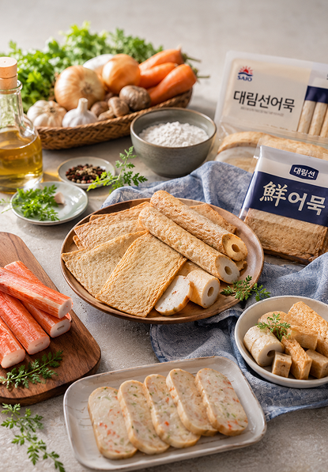
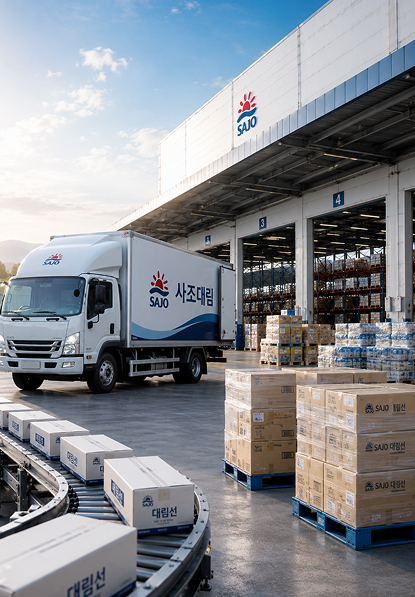

본문콘텐츠영역
ABOUT SAJO건강한 식문화를 만드는
종합식품기업, 사조대림
자연과 사람을 생각하는 마음으로
맛있는 식탁과 더 나은 일상을 만들어갑니다.


-
calendar_month 식품기업의 역사0
-
license 브랜드0
-
domain 사업영역0
-
language 해외수출0
PRODUCT브랜드소개
사조대림은 다양한 브랜드를 통해 고객의 일상에
더 맛있고 건강한 식문화를 전달합니다.
BUSINESS사업영역
신선한 원료의 생산과 가공부터 고객의 식탁에 오르는 다양한 식품과 제품까지, 사조대림은 식품산업 전반의 체계적인 사업 역량을 바탕으로 더 건강하고 안전한 먹거리와 새로운 식문화를 만들어갑니다.
수산·식품·대두·제조 등 각 분야의 전문성과 기술력을 바탕으로 엄격한 품질관리와 지속적인 연구개발을 이어가며 고객에게 신뢰받는 제품과 서비스를 제공하고 있습니다.
-

-

-

-

SUSTAINABLE지속가능영역
환경과 사회를 생각하는 책임 있는 경영으로
지속 가능한 미래와 함께 성장하겠습니다.


CUSTOMER고객센터
고객의 목소리에 귀 기울이고
더 나은 서비스로 보답하겠습니다.